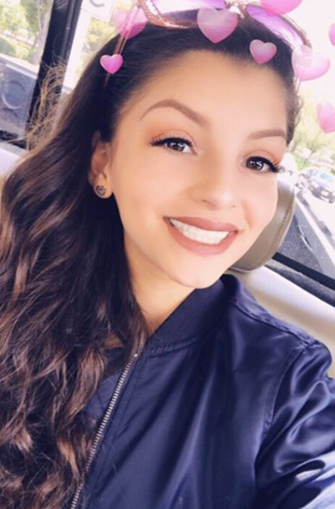
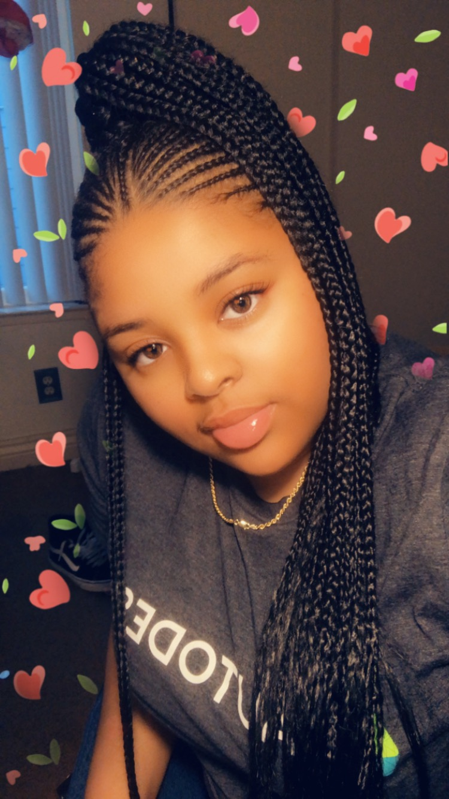
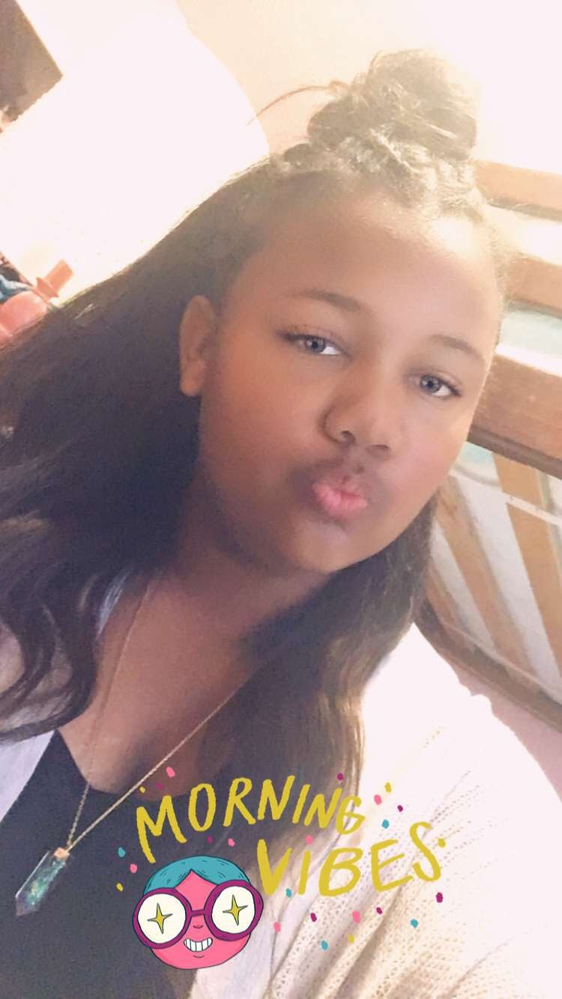

Karina:
Latina Web Designer for this website. I am a rising Junior at ICA Cristo Rey and participate in many extracurriculars such as CLIP, ambassadors, Latinas Unidas club, and a member of Krazy competitive dance team.

Khai’Aira:
I am a incoming Junior at Kipp Sf College Preparatory. I am just now starting to get into the whole computer science thing and so far it has been fun but challenging at times. For this project I researched scholarships for those who are interested in the STEM field. I also helped design the website.

Angeles:
Latina and incoming Junior at San Leandro High School. I was the lead researcher for the Scholarship section of this website. I play the right hitter for my high school volleyball team.

Aubri:
I am a senior at Jesse Bethel High School located in Vallejo, CA where I participate in varsity basketball and softball. I am also a member of my school’s black student union and photography club. I am the teen president of the Greater Vallejo Chapter of Jack and Jill of America. I am also a member of the CrossTalk Ministry at FMBC and a four year member of AVID. I was the lead research for the Women in CS section and also one of the web designers.